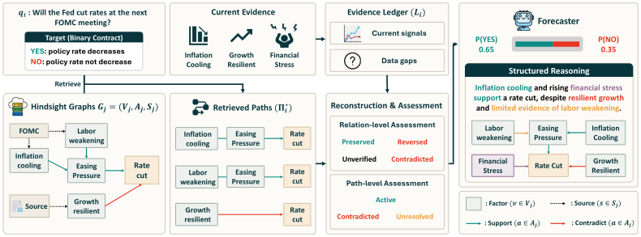
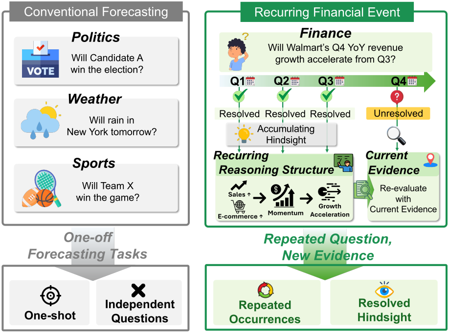

Accuracy
Higher is betterShare of targets assigned the correct answer.
Direct Forecast49.7%
ReFoRM55.0%
+5.3 percentage points


Forecasting real-world events requires reasoning under uncertainty from information available at a fixed cutoff. Recent work has improved how large language models (LLMs) retrieve evidence and produce probabilistic forecasts, but each question is treated independently even when similar events recur. Resolved occurrences carry experience for later forecasts, yet past outcomes and case summaries do not preserve the relationships that made an earlier occurrence informative. We develop ReFoRM (Recurrent-event Forecasting with Reasoning Memory), which organizes reasoning from resolved events into predictive paths, retrieves relevant paths for a later occurrence, and reconstructs their relations using evidence at the new forecast cutoff. We evaluate ReFoRM on the Recurring Financial Events Set, which contains 300 questions across 40 recurring financial event families and uses earlier occurrences as hindsight for 100 forecast targets. Across five LLMs and six baselines, ReFoRM improves categorical and probabilistic forecasting performance. Further analyses show that validating historical relations with current evidence and reconstructing them enhances forecasting. Reasoning evaluation also demonstrates stronger evidence grounding, logical validity, and mechanism specificity.
Earnings, inflation reports, and policy decisions return on a schedule. The benchmark groups comparable occurrences into families, so earlier events can inform later forecasts.

The Recurring Financial Events Set groups comparable occurrences into 40 event families across five categories. A family fixes the entity or series, target quantity, unit, comparison rule, and resolution source, while the forecast cutoff, available evidence, numerical boundaries, and outcome change from one occurrence to the next. Each family recurs seven or eight times, which gives 300 questions: 190 with three classes and 110 binary. Questions are generated from immutable snapshots of 32 FRED series and SEC Company Facts for eight issuers, and class boundaries use only observations available before the cutoff.
| Category | Event families | Prediction target |
|---|---|---|
| Corporate earnings | Apple, Amazon, Alphabet, Meta, Microsoft, NVIDIA, Tesla, and Walmart | Quarterly YoY revenue-growth acceleration (SEC) |
| Energy and commodities | Brent and WTI crude, Henry Hub gas, U.S. gasoline and diesel, aluminum, copper, and wheat | Monthly price return or change (FRED) |
| Macroeconomics | CPI, core CPI, PCE prices, payrolls, unemployment, retail sales, industrial production, and housing starts | Monthly change or growth (FRED) |
| Markets and credit | S&P 500, NASDAQ, VIX, U.S. dollar, Treasury yield, IG and HY spreads, and financial stress | Monthly return or change (FRED) |
| Monetary policy | Federal funds rate, Treasury and real yields, breakeven inflation, Federal Reserve assets, and M2 | Monthly rate change or growth (FRED) |
Reference questions. The first five occurrences of each family, 200 questions in total, with cutoffs between January 2023 and August 2025.
Forecast targets. The remaining two or three occurrences, 100 questions in total, with cutoffs between March 2025 and June 2026.
Start with resolved events, gather current evidence, test the historical relationships, and use the supported paths to forecast the next occurrence.
Keep the factors and relationships from resolved events.
Retrieve sources available before the new forecast cutoff.
Preserve, reverse, contradict, or leave a relation unverified.
Use supported paths to estimate the new outcome.
Step through the Fed example. Hover over a factor or graph link to compare its evidence; on a touch screen, tap a factor.
The resolved September 2023 meeting provides three paths into the case for easing: inflation, labor, and credit conditions. The paths keep their factors and historical signs. The 2023 decision and its probabilities are removed before the structure is reused.
Fed example · Public Federal Reserve sources · Illustrates relation reconstruction.
For each earlier occurrence in the same family that resolved before the forecast cutoff, ReFoRM builds a graph of factors, predictive relations, and supporting sources from documents available by its resolution. Each graph is reduced to complete root-to-target paths and the conditions under which they apply or fail. Resolved answers, realized values, and historical probabilities are removed.
Factors in the hindsight graphs guide the search for evidence available before the cutoff, while historical relations, answers, and probabilities stay hidden. The retrieved documents form an evidence ledger that records the target operation, usable baseline, observed signals, supporting sources, and missing information.
Complete paths that match the ledger are retrieved intact, so each relation stays connected to its surrounding factors. Every relation is then assessed against current evidence instead of being assumed to hold.
Paths become active, contradicted, or unresolved according to these assessments. Reconstruction may remain partial, and current evidence always takes precedence over historical structure.
The reconstructed structure and the evidence ledger produce a reasoning trace before any option is chosen. Low, central, and high estimates in the target unit are mapped to the public answer boundaries to give the forecast distribution, and weak magnitude support leads to a less concentrated forecast. Historical probabilities are not reused, and no post-hoc calibration is applied.
Explore the five-model average or select an individual model. Compare ReFoRM with each baseline across accuracy and probability quality.
100 forecast targets · Five-model average · Means over three runs
Share of targets assigned the correct answer.
+5.3 percentage points
Measures the gap between forecast probabilities and outcomes.
6.1% lower error
Penalizes low probabilities assigned to the outcome that occurs.
7.0% lower log loss
Direct Forecast uses current evidence. ReFoRM adds reasoning structures reconstructed against current evidence.
Table 3 in the paper ↗Share of targets assigned the correct answer. Higher is better.
Means over three runs. Bars start at zero.
5 / 5 modelsBest Brier score and NLL across all seven methods.
4 / 5 modelsBest accuracy across all seven methods.
On GPT-5 mini, Factor Memory and Case Memory have the highest accuracy. ReFoRM still has the best Brier score and NLL.
| Method | Earnings | Energy | Macro | Markets | Policy | Average |
|---|---|---|---|---|---|---|
| Direct Forecast | 0.2457 | 0.2183 | 0.2466 | 0.2116 | 0.2126 | 0.2270 |
| Structured Reasoning | 0.2443 | 0.2693 | 0.2606 | 0.2376 | 0.2187 | 0.2461 |
| Factor Memory | 0.2452 | 0.2261 | 0.2396 | 0.2272 | 0.1897 | 0.2256 |
| Principle Memory | 0.2588 | 0.2226 | 0.2588 | 0.2227 | 0.2167 | 0.2359 |
| Case Memory | 0.2667 | 0.2300 | 0.2655 | 0.2257 | 0.2236 | 0.2423 |
| Structure Memory | 0.2717 | 0.2250 | 0.2576 | 0.2110 | 0.2281 | 0.2387 |
| ReFoRM | 0.2391 | 0.2186 | 0.2250 | 0.2013 | 0.1967 | 0.2161 |
By category, ReFoRM has the lowest average Brier score and the best result in three of the five categories, and it improves on Direct Forecast in four. The gains span earnings, macroeconomics, markets, and monetary policy, while energy is nearly tied at 0.2186 against 0.2183.
ReFoRM produces reasoning with stronger evidence grounding and more specific explanations of how factors affect the forecast.
The highest share among the seven methods.
Compared with 2.86–3.17 for the six baselines.
Reasoning ratings cover one Gemini 2.5 Flash Lite run and serve as supporting evidence.
Forecasting scores do not show whether a prediction follows from valid reasoning. After each target resolves, we build a reference graph from post-resolution documents, used only for analysis. Each reasoning trace is decomposed into atomic relations that a blinded judge checks against this graph. ReFoRM has the highest share of verified relations at 56.4%, compared with 50.0% for Factor Memory and 33.6% for Structure Memory, the two strongest baselines on this measure.
A separate LLM judge rated all 700 traces from one Gemini 2.5 Flash Lite run on five dimensions, without seeing the outcome or the forecasting scores. ReFoRM has the highest mean on every dimension, and none of its correct forecasts rests on a trace scored at or below 2.5. These scores are not ground truth and cover one model and one seed, so they serve as supporting evidence.
| Method | Grounding | Validity | Alignment | Probability | Mechanism | Mean | Correct, ≤ 2.5 |
|---|---|---|---|---|---|---|---|
| No-memory baselines | |||||||
| Direct Forecast | 3.49 | 2.70 | 2.93 | 2.86 | 2.69 | 2.93 | 24% |
| Structured Reasoning | 3.01 | 2.71 | 3.07 | 2.54 | 2.96 | 2.86 | 29% |
| Resolved-event memory | |||||||
| Factor Memory | 3.58 | 2.89 | 3.25 | 2.81 | 3.31 | 3.17 | 19% |
| Principle Memory | 3.32 | 2.86 | 3.07 | 2.82 | 2.77 | 2.97 | 30% |
| Case Memory | 3.22 | 2.86 | 3.13 | 2.75 | 2.83 | 2.96 | 24% |
| Structure Memory | 3.13 | 2.72 | 3.09 | 2.53 | 2.85 | 2.86 | 37% |
| ReFoRM | 4.08 | 3.55 | 3.52 | 3.78 | 3.74 | 3.73 | 0% |
We also ask when reconstruction helps. Each forecast is grouped by how its retrieved relations were assessed, without using its prediction, outcome, or score. The largest Brier reduction over Direct Forecast comes from structures whose relations were reversed or contradicted. When a blinded judge confirms the assessment against the post-resolution graph, mixed and reversed or contradicted structures reduce Brier score by 0.039 and 0.032, while unconfirmed cases show no improvement. The gains depend more on reassessing relations than on carrying them forward unchanged.
See how relation reconstruction changes the predicted interval for U.S. CPI and clarifies the remaining uncertainty for Walmart revenue growth.
Extends the latest aggregate reading.
Predicts Below with probability 0.85
Balances the component pressures.
Predicts Within with probability 0.60
Falls back to a base rate.
Predicts Within with probability 0.50
Separates direction from magnitude.
Predicts Within with probability 0.65
| Outcome | Direct Forecast | ReFoRM |
|---|---|---|
| Below | 0.25 | 0.05 |
| Within outcome | 0.50 | 0.65 |
| Above | 0.25 | 0.30 |
| Brier score | 0.1250 | 0.0717 |
@article{jin2026hindsight,
title={From Hindsight to Foresight: Adapting Reusable Reasoning Structures from Recurring Financial Events},
author={Jin, Sangjin and Lee, Junhyeong and Han, Daehee and Kim, Kangmin and Park, Suhwan and Jeong, Seonghun and Park, Daekyung and Szpruch, Lukasz and Wang, Zhangyang and Choi, Chanyeol and others},
journal={Available at SSRN 7475378},
year={2026}
}